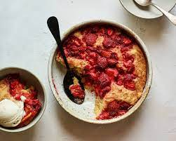

Strawberry Spoon Cake

Description
This was a relatively simple & quick strawbery cake. Delicious with vanilla ice cream!
Recipe & photo credit to NYT
Ingredients
- 1/2 cup unsalted butter, melted, plus more for greasing
- 5 oz. frozen (thawed) or fresh hulled strawberries (about 1 cup)
- 2/3 cup packed light brown sugar
- 1/2 cup whole milk, at room temperature
- 1/2 tsp kosher salt
- 1 cup all purpose flour
- 1 tsp baking powder
- Vanilla ice cream (optional, for serving)
Steps
- Heat oven to 350 degrees and grease an 8-inch (square or round) baking dish with butter. Set aside.
- Using your hands or the back of a fork, mash the berries to release all their juices, and stir in 1/3 cup of the brown sugar. Set aside.
- n a medium bowl, whisk together the melted butter, remaining 1/3 cup brown sugar, milk and salt, then add the flour and baking powder and continue whisking just until the batter is smooth. Transfer the batter (it’s not much) to the greased baking dish, and spread evenly into corners.
- Spoon the strawberries and all their juices over the top of the cake batter. Place in the oven and bake for 20 to 25 minutes, or just when a toothpick comes out clean in the center. Remove from the oven and allow to cool for 3 to 5 minutes before spooning into bowls. Serve warm with ice cream.